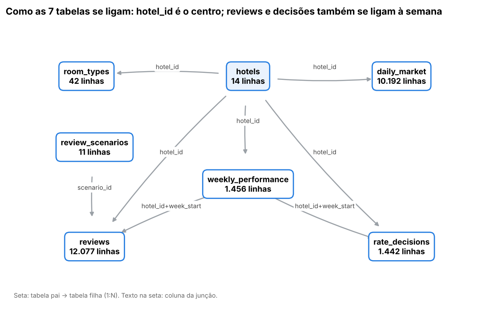
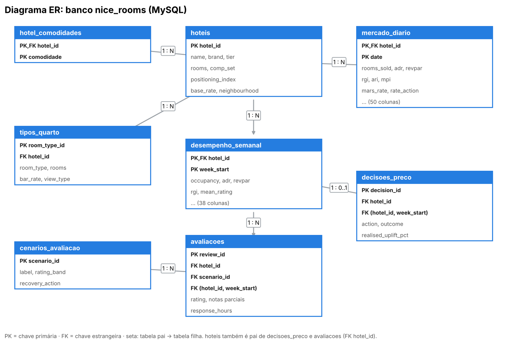

Receita total
–
quartos + extras, US$Desempenho, decisões de preço e avaliações de 14 hotéis, 2027–2028
Nenhum dado para essa combinação de filtros. Escolha outro hotel ou categoria.
–
quartos + extras, US$–
quartos vendidos ÷ disponíveis–
diária média por quarto vendido–
receita de quartos por quarto disponível–
RevPAR vs. concorrentes (100 = empate)–
avaliações de 1 a 5 estrelasOs pontos maiores marcam meses com eventos de demanda (feiras, regata, festival).
Acima de 100, o hotel fatura mais por quarto que a média do seu grupo de concorrentes.
Índices contra o grupo de concorrentes. As linhas em 100 dividem os quadrantes.
Resultado da semana seguinte (RevPAR ±1,5%). É uma observação, não prova de causa.
Percentual das avaliações em cada nota.
Quantidade de avaliações por motivo. Passe o mouse para ver a nota média e a ação recomendada.
Clique no cabeçalho de uma coluna para ordenar. A caixa de pesquisa filtra as linhas.
| Hotel | Tier | Receita (US$) | Ocupação | ADR | RevPAR | RGI | Nota | % 1–2★ |
|---|
Nenhum hotel corresponde à pesquisa.
–
hotéis com ADR mais de 2% abaixo–
hotéis entre −2% e +2%–
hotéis com ADR mais de 2% acima–
das noites filtradasDiferença entre o ADR cobrado e o MARS (ponderados pelos quartos vendidos). A faixa sombreada é ±2%.
A recomendação cruza o preço (contra o MARS) com a ocupação contra os concorrentes (MPI).
| Hotel | Tier | ADR cobrado | MARS adequado | Diferença | MPI | Noites abaixo / acima ±6% | O que fazer |
|---|
Nenhum hotel corresponde à pesquisa.
Referência de preço para cada gerente: média do MARS das noites de cada estação.
| Hotel | Inverno | Primavera | Verão | Outono |
|---|
Nenhum hotel corresponde à pesquisa.
Granularidade = o que uma linha representa. Os ausentes são esperados e explicados no README do dataset.
| Tabela | Linhas | Colunas | Uma linha é… | Ausentes |
|---|
Nenhuma tabela corresponde à pesquisa.
Verificado no Python: chave única no pai, máximo de filhos por pai e registros órfãos.
| Tabela pai | Tabela filha | Chave da junção | Cardinalidade | Máx. filhos | Órfãos |
|---|
Nenhuma relação corresponde à pesquisa.


Nenhum gráfico corresponde à pesquisa.
quartos vendidos ÷ quartos disponíveisQuanto da casa foi vendida.
receita de quartos ÷ quartos vendidosQuanto rendeu cada quarto vendido.
receita de quartos ÷ quartos disponíveisReceita por quarto, vendido ou não. Igual a ocupação × ADR.
RGI = RevPAR ÷ RevPAR dos concorrentes × 100ARI = ADR ÷ ADR dos concorrentes × 100MPI = ocupação ÷ ocupação dos concorrentes × 100100 = empate com o grupo de concorrentes (mesmo tier). RGI ≈ ARI × MPI ÷ 100.
mediana(ADR dos concorrentes na noite) × posicionamento do hotel ÷ mediana(posicionamento dos concorrentes)Concorrentes = mesmo tier, sem o próprio hotel. Faixa aceitável: MARS ± 6%. Reproduzido pelo programa em 100% das 10.192 noites.
ADR ÷ MARS1,00 = cobrou exatamente o MARS; 0,95 = 5% abaixo.
baixar se posição ≥ 1,12 · subir se evento, reservas ≥ 0,70 e posição ≤ 1,02 · subir se reservas ≥ 0,80 e posição ≤ 0,98 · subir se reservas ≥ 0,72 e posição ≤ 0,92 · baixar se reservas ≤ 0,54 e posição ≥ 1,00 · baixar se reservas ≤ 0,62 e posição ≥ 1,06 · senão manterProgramada em regra_acao(): bate com 97,0% dos rótulos (3% são ruído proposital do dataset).
ADR de um grupo = Σ receita ÷ Σ quartos vendidosPor isso o ADR geral é US$ 224, e não US$ 207 (média simples das linhas diárias). Hotéis grandes pesam mais, como na vida real.
r = cov(X, Y) ÷ (desvio(X) × desvio(Y))De −1 a +1. Mede relação linear, não causa (pandas: df.corr()).
relativa = contagem ÷ total · acumulada = soma das relativas até a notapandas: value_counts() e cumsum(). 55,8% das avaliações têm 3★ ou menos.
receita por dia 2028 × (1 + crescimento por dia 2027→2028) × dias do mêsPor dia, porque 2027 tem só 362 dias nos dados e 2028 tem 366.
read_json(lines=True), to_datetime, isna, explode, value_counts, cumsum, isin, merge, groupby/agg, median, corr, crosstab, pivot/unstack, apply, to_csv.
subplots, bar/barh, plot, scatter, boxplot, imshow, axhline/axvline/axvspan, annotate/text, savefig.
inspecionar_tabela(), verificar_relacao(), calcular_mars(), regra_acao(), recomendacao(), registrar(), tabela_md(), salvar_grafico().
CREATE TABLE com PRIMARY KEY, FOREIGN KEY e CHECK; JOIN, LEFT JOIN, GROUP BY, HAVING, CASE, RANK() OVER (PARTITION BY), UNION ALL.
Nenhum cálculo corresponde à pesquisa.